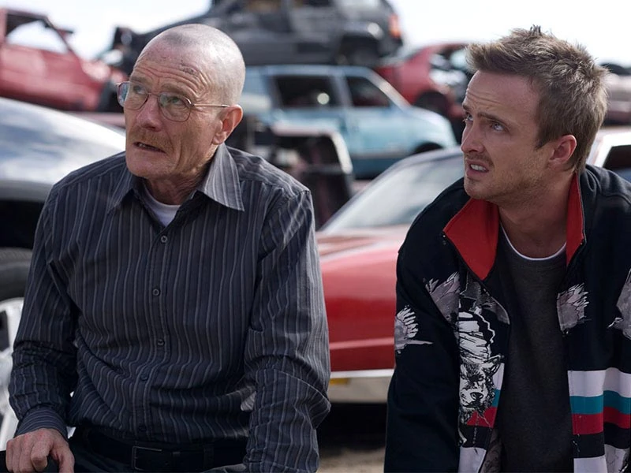
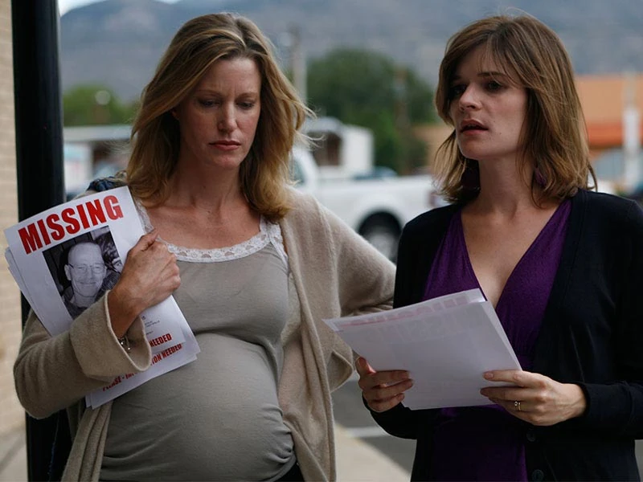
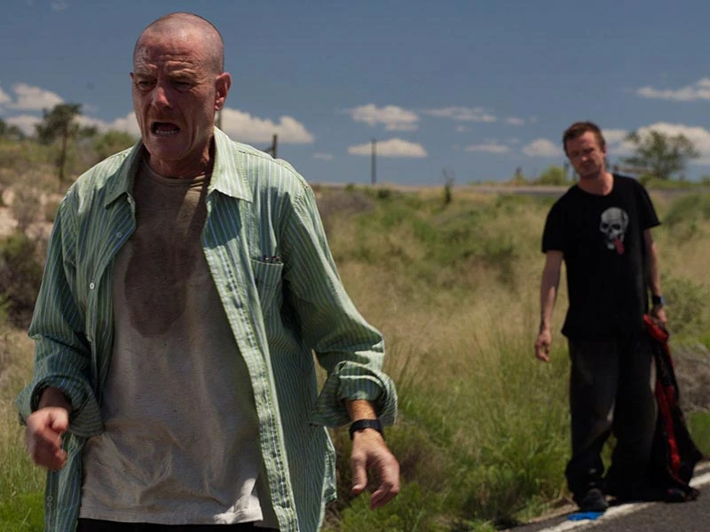
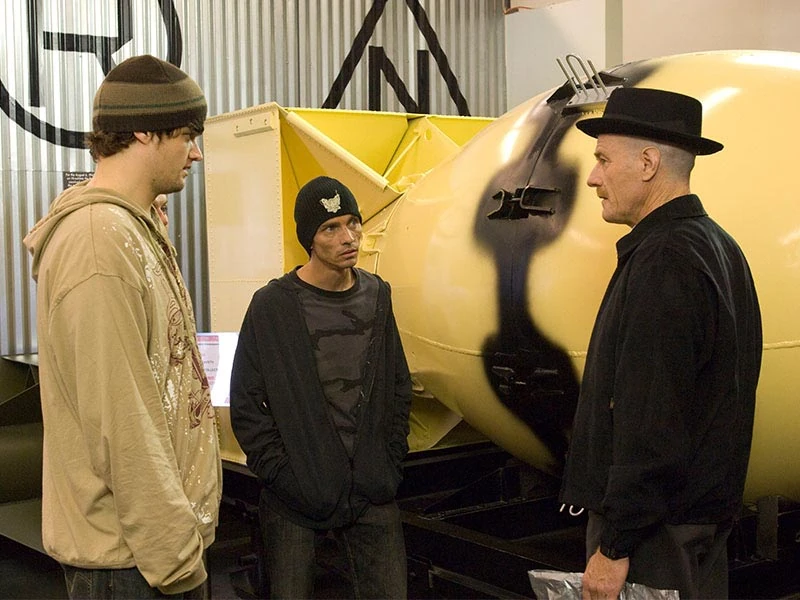

Temporada 2 : El efecto colateral del crimen
En un depósito de chatarra abandonado, Tuco Salamanca compra metanfetamina a Jesse Pinkman y Walter White, y luego mata a su secuaz No-Doze por hablar fuera de turno. Jesse compra un arma para protegerse de Tuco, pero Walt propone que maten a Tuco con veneno. Hank Schrader le envía a Walt una foto del teléfono celular de No-Doze y Gonzo, el otro asociado de Tuco, muerto en el depósito de chatarra. Poco después, Tuco secuestra a Walt y Jesse a punta de pistola. (Seven Thirty-Seven)
Hank informa a su equipo de la DEA sobre una redada en la sede de Tuco, y luego se toma un permiso para buscar a Walt. Marie Schrader le dice a Skyler White que Walt podría tener un segundo teléfono celular y sugiere que Hank visite a la madre de Jesse. Diane Pinkman le cuenta a Hank sobre el automóvil de Jesse, que Hank rastrea hasta el lugar de Tuco usando LoJack.
Atrapado en un escondite en el desierto, Walt y Jesse intentan darle el veneno a Tuco, pero su tío enfermo, Héctor Salamanca, le avisa a Tuco. Jesse y Walt escapan y se esconden cerca cuando Hank se acerca a Tuco y lo mata en un tiroteo (Grilled)
Para encubrir su desaparición, Walt finge la amnesia y es hospitalizado mientras Jesse retira las pruebas de metanfetamina de su casa, convence al primo de Badger, Clovis, de que se lleve el RV y lo arrestan. Hank, interrogando a Jesse, lo acusa de trabajar con Tuco, pero libera a Jesse cuando Tio se niega a identificarlo. Walt regresa a casa donde Skyler le pregunta sobre el segundo teléfono (Bit by a Dead Bee)
Un quiebre Jesse le pide a Walt la mitad de su dinero restante, pero Walt se niega. Los padres de Jesse, conscientes del laboratorio de metanfetamina, lo obligan a abandonar su casa. Entra en el patio de reparaciones de Clovis y duerme en el RV, robándolo de nuevo después de que Clovis amenaza con vender los suministros de cocina. Walt finalmente comparte parte de su efectivo restante con Jesse. Mientras tanto, un Skyler sospechoso mantiene su distancia de Walt y fuma para aliviar la tensión. ("Down")
Walt confronta a Skyler por los cigarrillos. "Esto es muy diferente a ti", dice. "¿Cómo sabrías?" ella replica. Jesse alquila un apartamento dúplex de Jane Margolis, que vive al lado, y reúne a un equipo de metanfetamina con sus amigos de toda la vida, Badger, Skinny Pete y Combo. Todo va bien hasta que una pareja adicta roba a Skinny Pete.
Mientras tanto, en la sede de la DEA, Hank informa a su jefe acerca de la misteriosa metanfetamina azul que se vende en las calles, y comienzan una investigación sobre el supuesto distribuidor que vende el producto, un hombre llamado "Heisenberg". Walt visita a Jesse y exige represalias por el robo de su distribuidor. ("Breakage")
Jesse, al acecho de los drogadictos, descubre a un niño pequeño en su casa. Los drogadictos devuelven algo de metanfetamina y le prometen a Jesse las ganancias de un cajero automático robado, pero la mujer noquea a Jesse. Después de que Spooge, el adicto al sexo masculino, se burla de su mujer, ella le aplasta la cabeza con el cajero automático. Jesse toma algo de efectivo, llama al 911 y saca al niño de la casa a toda prisa.
Skyler, mientras tanto, agradece a Gretchen Schwartz desconcertada por financiar la quimioterapia de Walt; Walt le ruega a Gretchen que no admita la verdad. Gretchen llama a Skyler para decirle que están cortando el dinero, por lo que Walt le dice a Skyler que Elliott Schwartz está en quiebra. ("Peekaboo")
La noticia del asesinato de Spooge hace que la gente en las calles crea que Jesse fue quien mató a Spooge con el cajero automático. Walt usa esto como una ventaja para expandir su territorio, ahora que la gente realmente teme cruzarse en el camino de "Heisenberg".
Skyler regresa a Beneke Fabricators, su antiguo empleador, donde su jefe Ted Beneke una vez coqueteó con ella. Skyler le asegura a Marie que el incidente no volverá a ocurrir, pero los dos comparten un momento íntimo cuando Skyler habla sobre el cáncer de Walt.
Hank es ascendido a trabajar a tiempo parcial en la oficina de la DEA en El Paso, pero sufre ataques de ansiedad por su encuentro con Tuco. Su ansiedad alcanza nuevos máximos durante una vigilancia en México cuando explota una tortuga con la cabeza de un informante, mutilando a varios agentes de la DEA. Walt finalmente aconseja a Hank que enfrente sus temores, y Hank regresa a trabajar. De vuelta en el dúplex, Jesse y Jane desarrollan un romance. ("Negro y Azul").
Después de que un policía encubierto arresta a Badger, Walt y Jesse contratan a un abogado sospechoso llamado Saul Goodman. Hank le dice a Badger que irá en libertad si identifica a "Heisenberg", por lo que Saul hace arreglos para que un ex convicto se haga pasar de Walt.
Jesse sugiere que él y Jane compartan un porro, pero ella le dice que ha estado sobria durante 18 meses. Más tarde, Jane trata a Jesse bruscamente frente a Donald Margolis, su padre, lo que hace que Jesse se sienta desmoralizado hasta que le entrega un boceto de una superheroína llamada "Apology Girl". ("Better Call Saul")
Walt, a la espera de los resultados de las pruebas, está seguro de que será desalentador, engaña a Jesse para que participe en un maratón de metanfetamina. Es exitoso, pero varios percances dejan el RV desactivado y los dos hombres varados sin agua en el calor del desierto. Walt improvisa una batería que funciona y regresan a Albuquerque, donde Walt se sorprende al saber que su cáncer está en remisión ("4 Days Out")
Skyler organiza una fiesta para celebrar las buenas noticias de Walt. Hank y Walt casi llegan a las manos después de que Walt vierte los tragos de tequila de Walter Jr. Después de disculparse por su comportamiento en la fiesta, Walt se consume con mejoras en el hogar ("Over").
Combo es asesinado a tiros. Asustado por la muerte de Combo, Skinny Pete deja de comerciar y Jesse se droga con Jane, quien le introduce la heroína.
Más tarde, Saul ofrece poner a Walt y Jesse en contacto con un distribuidor de narcóticos de bajo perfil que comprará su producto a granel, pero esta persona nunca se reunirá con Walt y Jesse si no cree que puede confiar en ellos. Debido a que Jesse está bajo los efectos de la heroína, asusta al distribuidor al llegar alto para una reunión. Walt persiste, y Gustavo Fring finalmente se revela a Walt, dándole una hora para entregar su metanfetamina.
Mientras tanto, Skyler descubre irregularidades contables en Beneke. Ted admite fraude, pero Skyler elige quedarse de todos modos, justo antes de comenzar el parto. Walt, apresurándose a recuperar la metanfetamina de su compañero, encuentra a Jesse desmayado en su apartamento después de usar heroína con Jane una vez más. Walt se ve obligado a robarle la metanfetamina a Jesse para venderla él mismo, se ve obligado a ignorar las llamadas de Skyler y perder el nacimiento de su hija ("Mandala")
Jesse llama a Walt, asustado porque su metanfetamina ha sido robada. Cuando Jesse descubre la verdad, Walt dice que tendrá la participación de $ 480,000 de Jesse hasta que esté limpio. Saul descubre una manera de lavar la visita de Walt a través de SaveWalterWhite.com, el sitio web que Walter White Jr. establece para recaudar dinero para la cirugía de su padre.
Jane, que le prometió a su padre Donald que entrará en rehabilitación al día siguiente, chantajea a Walt por el dinero de Jesse. Walt le da la vuelta, pero una conversación casual en el bar con Donald lo inspira a regresar al departamento de Jesse, donde él observa mientras Jane, drogada, muere ahogada por su propio vómito ("Phoenix")
A la mañana siguiente, Jesse llama a Walt, quien organiza un operativo para retirar las pruebas de drogas del departamento de Jesse. "La maté", más tarde solloza Jesse. Walt registra a Jesse en rehabilitación.
Antes de someterse a una cirugía, Walt, mientras está bajo anestesia, sin saberlo, le revela a Skyler que tiene un segundo teléfono. Su cirugía es exitosa, pero unas semanas más tarde Skyler lo deja. Donald vuelve a trabajar como controlador de tráfico aéreo. Distraído por los pensamientos de su hija, inadvertidamente hace que dos aviones choquen en el cielo sobre la casa de Walt.